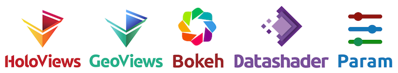

strata ny18 ¶
Welcome to the PyViz tutorial at Strata New York 2018! ¶
This tutorial will take you through all of the steps involved in exploring data of many different types and sizes, building simple and complex figures, working with billions of data points, adding interactive behavior, widgets and controls, and deploying full dashboards and applications.
The tutorial outlined here is given as a half-day course led by trained instructors. For self-paced usage, you should consult the main tutorial index .
We'll be using a wide range of open-source Python libraries, including the Anaconda -supported tools HoloViews , GeoViews , Bokeh , Datashader , and Param :

These libraries have been carefully designed to work together to address a very wide range of data-analysis and visualization tasks, making it simple to discover, understand, and communicate the important properties of your data. For more background on these tools and why and how they are integrated, see PyViz.org/background .

This notebook serves as the homepage of the tutorial, including a table of contents listing each tutorial section. Here, timings listed in brackets (" [2 min] ") indicate material that will be skimmed in the live tutorial, but which can be examined later in more detail as self-paced material.
Index and Schedule ¶
-
Overview
- 10 min 0 - Setup : Setting up the environment and data files.
- 40 min 1 - Workflow Introduction : Overview of solving a simple but complete data-science task, using each of the main PyViz tools.
-
5 min
Break
-
Making data visualizable
- 30 min 2 - Annotating Data : Using HoloViews Elements to make your data instantly visualizable
- 20 min 3 - Customizing Visual Appearance : How to change the appearance and output format of elements.
- 10 min Exercise 1
-
10 min
Break
-
Datasets and collections of data
- 30 min 4 - Working with Tabular Data : Exploring tabular/columnar data.
- [2 min] 5 - Working with Gridded Data : Exploring a gridded (n-dimensional) dataset.
- 10 min Exercise 2
- [2 min] 6 - Network Graphs : Exploring network graph data.
- [2 min] 7 - Geographic Data : Plotting data in geographic coordinates.
-
[omit]
Exercise 3
-
Dynamic interactions
- 25 min 8 - Custom Interactivity : Using HoloViews "streams" to add interactivity to your visualizations.
- [2 min] 9 - Operations and Pipelines : Dynamically transforming your data as needed
- 20 min 10 - Working with Large Datasets : Using datasets too large to feed directly to your browser.
- [2 min] 11 - Streaming Data : Live plots of dynamically updated data sources.
-
15 min
Exercise 4
-
Apps and dashboards
- [2 min] 12 - Parameters and Widgets : Declarative custom controls
- [2 min] 13 - Deploying Bokeh Apps : Deploying your visualizations using Bokeh server.
- [2 min] A1 - Exploration with Containers : Containers that let you explore complex datasets.
- [2 min] A2 - Dashboard Workflow : PyViz intro for people focusing on dashboards.
- [omit] Exercise 5
Related links ¶
You will find extensive support material on the websites for each package. You may find these links particularly useful during the tutorial:
- HoloViews reference gallery : Visual reference of all elements and containers, along with some other components
- HoloViews getting-started guide : Covers some of the same topics as this tutorial, but without exercises